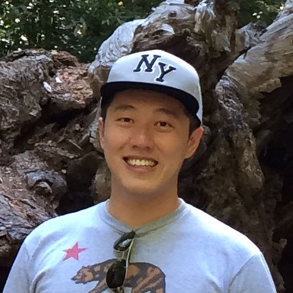

|

|
Chengming Jiang
Ph.D. Candidate
CS, UC DAVIS
Email: cmjiang AT ucdavis.edu
|
I am a Ph.D. candidate, major in Computer Science at
University of
California Davis,
and advised by
Professor Zhaojun Bai.
My research interests are in numerial algorithms and high performance
computing.
Previously, I got my M.S. and B.S. degree in Information Security at
Shanghai Jiao Tong University.
Recent Publications and Projects at UC Davis
-
Robust and efficient computation of eigenvectors in a
generalized spectral method for constrained clustering.
- Authors: Chengming Jiang, Huiqing Xie and Zhaojun Bai.
- Algorithm: a generalization of Courant-Fischer
variational principle and a spectral
regularization/enhancement scheme for a symmetric
semi-definite matrix pencil.
- Software: a MATLAB implementation for constrained
image segmentation.
[Github]
- Paper: accepted at the 20th International Conference
on Artificial Intelligence and Statistics
(AISTATS 2017), 2017.
[Paper]
-
A fast selected inversion algorithm for Green's function
calculation in many-body quantum Monte Carlo simulations.
- Authors: Chengming Jiang, Zhaojun Bai and
Richard Scalettar.
- Algorithm: a fast algorithm for computing the inverse
of structured matrices.
- Software: an OpenMP/MPI hybrid implementation embedded
into QUantum Electron Simulation Toolbox
(QUEST).
[Github]
- Paper: In Proceeding of the 30th IEEE International
Parallel and Distributed Processing Symposium (IPDPS 2016),
pp. 473-482, 2016.
[Paper]
[Talk]
- Posters: (1) SIAM Conference on Applied Linear Algebra
2015; (2) Bay Area Scientific Computing Day (BASCD) 2015.
[Poster]
- Fix-Heiberger Reduction Algorithm for Solving the
Ill-conditioned Generalized Symmetric Eigenvalue Problem
- Authors: Chengming Jiang and Zhaojun Bai.
- Algorithm: a Fix-Heiberger reduction algorithm for
solving generalized symmetric eigenvalue problem in the form
of Ax=λBx where A and B are real symmetric matrices and
B is positive semi-definite w.r.t. a threshold ε.
[Draft]
[Slides]
- Software: (1) MATLAB
[dsygvic.m];
(2) a LAPACK-style Fortran routine
[GSEPIC.tar.gz].
Previous Publications at SJTU
-
Tanfeng Sun, Xinghao Jiang, Chengming Jiang, and
Yaqing Li.
A video content classification algorithm applying to human
action recognition.
Elektronika ir Elektrotechnika 19(4):61-64, 2013.
[Preprint]
-
Xinghao Jiang, Tanfeng Sun, Bing Feng, and Chengming Jiang.
A space-time Surf descriptor and its application to
action recognition with video words.
In Proceeding of the 8th IEEE International Conference on
Fuzzy Systems and Knowledge Discovery (FSKD 2011), vol.3,
pp. 1911-1915, 2011.
[Preprint]
Teaching Assistance
ECS231 Large Scale Scientific Computing (Spring 2016 UC Davis)